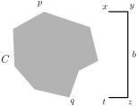
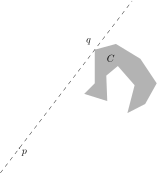

Snapping¶
One of the nice features of Ipe is the possibility of having the mouse snap to other objects during entry or moving. Certain features on the canvas become “magnetic”, and it is very easy to align objects to each other, to place new objects properly with respect to the present objects and so on.
Snapping comes in three flavors: grid snapping, context snapping, and angular snapping.
In general, you turn a snapping mode on by pressing one of the buttons in the Snap toolbar, or selecting the equivalent functions in the Snap menu. The buttons are independent, you can turn them on and off independently. (The snapping modes, however, are not independent. See below for the precise interaction.) The keyboard shortcuts are rather convenient since you will want to toggle snapping modes on and off while in the middle of creating or editing some object.
Whenever one of the snapping modes is enabled, you will see a little cross near the cursor position. This is the secondary cursor Fifi 1. Fifi marks the position the mouse is snapped to.
- 1
Fifi is called after the dog in the
roguecomputer game installed on most Unix systems in the 1980’s, because it also keeps running around your feet.
Grid snapping¶
Grid snapping is easy to explain. It simply means that the mouse
position is rounded to the nearest grid point. Grid points are points
whose coordinates are integer multiples of the grid size, which can
be set in the box in the Snap field. You have a choice from a set of
possible grid sizes. The units are Postscript/PDF points (in LaTeX
called bp), which are equal to 1/72 of an inch.
You can ask Ipe to show the grid points by selecting the function . The same function turns it off again.
Context snapping¶
When context snapping is enabled, certain features of the objects of your current drawing become magnetic. There are three buttons to enable three different features of your objects: vertices, the boundary, and intersection points.
When the mouse is too far away from the nearest interesting feature, the mouse position will not be “snapped”. The snapping distance can be changed by setting Snapping distance value in the preference dialog. If you use a high setting, you will need to toggle snapping on and off during drawing. Some people prefer to set snapping on once and for all, and to set the snap distance to a very small value like 3 or 4.
The features that you can make “magnetic” are the following:
- vertices
are vertices of polygonal objects, control points of multiplicity three of splines, centers of circles and ellipses, centers and end points of circular arcs, and mark positions.
- boundaries
are the object boundaries of polygonal objects, splines and splinegons, circles and ellipses, and circular arcs.
- intersections
are the intersection points between the boundaries of path objects.
Custom grid snapping¶
Sometimes you need a special grid, for instance a triangular grid, or a grid for making perspective drawings. Since Ipe cannot offer every possible grid under the sun, it instead offers you snapping to custom grids.
To use custom grid snapping, create a layer with name GRID, and draw your grid in this layer. You can then snap to the intersection points between the objects in the GRID layer. It does not matter if the layer is visible or not.
The grid maker ipelet offers a few ready-made grids to be used as custom grids.
Angular snapping¶
When angular snapping is enabled, the mouse position is restricted to lie on a set of lines through the origin of your current axis system. The lines are the lines whose angle with the base direction is an integer multiple of the snap angle. The snap angle can be set in the second box in the Snap toolbar. The values are indicated in degrees. So, for a snapping angle of \(45^{\circ}\), we get the snap lines indicated in the figure below. (In the figure the base direction—indicated with the arrow—is assumed horizontal.)
For a snap angle of 180 degrees, snapping is to a single line through the current origin.
In order to use angular snapping, it is important to set the axis system correctly. To set the origin, move the mouse to the correct position, and press the F1-key. Note that angular snapping is disabled while setting the origin. This way you can set a new origin for angular snapping without leaving the mode first. Once the origin has been set, the base direction is set by moving to a point on the desired base line, and pressing the F2-key. Again, angular snapping is disabled. Together, origin and base direction determine the current axis system. Remember that the origin is also used as the fix-point of scale, stretch, and rotate operations, if it is set.
You can hide the current axis system by pressing Ctrl+F1. This also turns off angular snapping, but preserves origin and orientation of the axes. To reset the orientation (such that the $x$-axis is horizontal, use Ctrl+F2).
You can set origin and base direction at the same time by pressing F3 when the mouse is very near (or snapped to) an edge of a polygonal object. The origin is set to an endpoint of the edge, and the base direction is aligned with it. This is useful to make objects parallel to a given edge.
For drawing rectilinear or c-oriented polygons, the origin should be set to the previous vertex at every step. This can be done by pressing F1 every time you click the left mouse button, but that would not be very convenient. Therefore, Ipe offers a second angular snap mode, called automatic angular snapping. This mode uses an independent origin, which is automatically set every time you add a vertex when creating a polygonal object. Note that while the origin is independent of the origin set by F1, the base direction and the snap angle used by automatic angular snapping is the same as for angular snapping. Hence, you can align the axis system with some edge of your drawing using F3, and then use automatic angular snapping to draw a new object that is parallel or orthogonal to this edge.
This snapping mode has another advantage: It remains silent and ineffective until you start creating a polygonal object. So, even with automatic angular snapping already turned on, you can still freely place the first point of a polygon, and then the remaining vertices will be properly aligned to make a \(c\)-oriented polygon.
The automatic angular snapping mode is never active for any non-polygonal object. In particular, to move an object in a prescribed direction, you have to use normal angular snapping.
A final note: Many things that can be done with angular snapping can also be done by drawing auxiliary lines and using context snapping. It is mostly a matter of taste and exercise to figure out which mode suits you best.
Interaction of the snapping modes¶
Not all the snapping modes can be active at the same time, even if all buttons are pressed. Here we have a close look at the possible interactions, and the priorities of snapping.
The two angular snapping modes restrict the possible mouse positions to a one-dimensional subspace of the canvas. Therefore, they are incompatible with the modes that try to snap to a zero-dimensional subspace, namely vertex snapping, intersection snapping, and grid snapping. Consequently, when one of the angular snapping modes is on, vertex snapping, intersection snapping, and grid snapping are ineffective.
On the other hand, it is reasonable to snap to boundaries while in an angular snapping mode, and this function is actually implemented correctly. When both angular and boundary snapping are on, Ipe will compute intersections between the snap lines with the boundaries of your objects, and whenever the mouse position on the snap line comes close enough to an intersection, the mouse is snapped to that intersection.
The two angular snapping modes themselves can also coexist in the same fashion. If both angular and automatic angular snapping are enabled, Ipe computes the intersection point between the snap lines defined by the two origins and snaps there. It the snap lines are parallel or coincide, automatic angular snapping is used.
When no angular snapping mode is active, Ipe has three priorities. First, Ipe checks whether the closest vertex or intersection point is close enough. If that is not the case, the closest boundary edge is determined. If even that is too far away, Ipe uses grid snapping (assuming all these modes are enabled).
Note that this can actually mean that snapping is not to the closest point on an object. Especially for intersections of two straight edges, the closest point can never be the intersection point, as in the figure below!
Examples¶
It takes some time and practice to feel fully at ease with the different snapping modes, especially angular snapping. Here are some examples showing what can be done with angular snapping.
Example 1:¶
We are given segments \(s_1\), \(s_2\), and \(e\), and we want to add the dashed vertical extensions through \(p\) and \(q\).
set F4 and F5 snapping on, go into line mode, and reset axis orientation with Ctrl+F2,
go near \(p\), press F1 and F8 to set origin and to turn on angular snap.
go near \(p'\), click left, and extend segment to \(s_1\).
go near \(q\), press F1 to reset origin, and draw second extension in the same way.
Example 2:¶
We are given the polygon \(C\), and we want to draw the bracket \(b\), indicating its vertical extension.
set F4 and F9 snapping on, go into line mode, reset axis orientation with Ctrl+F2, set snap angle to \(90^{\circ}\).
go near \(p\), press F1 and F8 to set origin and angular snapping
go to \(x\), click left, extend segment to \(y\), click left
now we want to have \(z\) on a horizontal line through \(q\): go near \(q\), and press F1 and F8 to reset origin and to turn on angular snapping. Now both angular snapping modes are on, the snap lines intersect in \(z\). item click left at \(z\), goto \(x\) and press F1, goto \(t\) and finish bracket.
Example 3:¶
We want to draw the following “skyline”. The only problem is to get \(q\) horizontally aligned with \(p\).

draw the baseline using automatic angular snapping to get it horizontal.
place \(p\) with boundary snapping, draw the rectilinear curve up to \(r\) with automatic angular snapping in \(90^{\circ}\) mode.
now go to \(p\) and press F1 and F8. The snap lines intersect in \(q\). Click there, turn off angular snapping with Shift-F2, and finish curve. The last point is placed with boundary snapping.
Example 4:¶
We want to draw a line through \(p\), tangent to \(C\) in \(q\).
with vertex snapping on, put origin at \(p\) with F1
go to \(q\) and press F2. This puts the base direction from \(p\) to \(q\).
set angular snapping with F8 and draw line.
Example 5:¶
We want to draw the following “windmill”. The angle of the sector and between sectors should be \(30^{\circ}\).
set vertex snapping, snap angle to \(30^{\circ}\), reset axis orientation with Ctrl+F2,
with automatic angular snapping, draw a horizontal segment \(pq\).
go to \(p\), place origin and turn on angular snapping with F1 and F8,
duplicate segment with d, go to \(q\) and pick up \(q\) for rotation (with Alt and the right mouse button, or by switching to rotate mode). Rotate until segment falls on the next snap line.
turn off angular snapping with F8. Choose arc mode, variant center & two points,
go to \(p\), click for center. Go to \(q\), click for first endpoint of arc, and at \(r\) for the second endpoint. Select all, and group.
turn angular snapping on again. Duplicate sector, and rotate by \(60^{\circ}\), using angular snapping.
duplicate and rotate four more times.
Example 6:¶
We want to draw a \(c\)-oriented polygon, where the angles between successive segments are multiples of \(30^{\circ}\). The automatic angular snapping mode makes this pretty easy, but there is a little catch: How do we place the ultimate vertex such that it is at the same time properly aligned to the penultimate and to the very first vertex?
set snap angle to \(30^{\circ}\), and turn on automatic angular snapping.
click first vertex \(p\) and draw the polygon up to the penultimate vertex \(q\).
it remains to place \(r\) such that it is in a legal position both with respect to \(q\) and \(p\). The automatic angular snapping mode ensures the position with respect to \(q\). We will use angular snapping from \(p\) to get it right: Go near \(p\) and turn on vertex snapping. Press F1 to place the origin at \(p\) and F8 to turn on angular snapping. Now it is trivial to place \(r\).